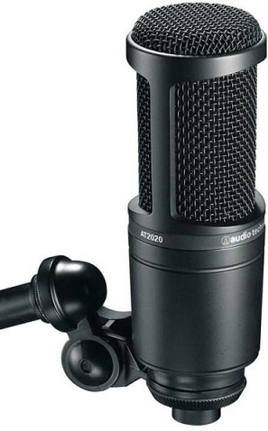

|  |
- ár/teljesítmény szabvány a merőleges tengelyű stúdió kondenzátor mikrofon technológiában
- ideális project/home stúdió alkalmazásra
- nagy hangnyomás kezelése és széles dinamikatartomány kínál páratlan sokoldalúságot
- egyedileg fejlesztett kis tömegű membrán biztosít kiterjesztett frekvenciamenetet és kiemelkedő tranziensátvitelt
- kardioid iránykarakterisztika, mely csökkenti az oldalról és hátulról érkező hangok arányát, növelve a megcélzott hangforrás izolációját
- csuklós, menetes mikrofontartó, mely biztonságos felfogatást, egyszerű és precíz mikrofonpozícionálást biztosít
- alacsony saját zaj, mely kiválóan illik a finom digitális felvevőeszközökhöz
|
- Kapszula: permanens polarizálású kondenzátor
- Iránykarakterisztika: kardioid
- Frekvenciaátvitel: 20 - 20 000 Hz
- Érzékenység: -37dB (14.1mV)
- Impedancia: 100 Ohm
- Maximális hangnyomás 1kHz, 1%THD: 144 dB SPL
- Jel/zaj viszony: 74 dB (1kHz, 1 Pa)
- Dinamikatartomány: 124dB, 1kHz
- Ekvivalens zaj: 20 dB SPL
- Mélyvágó szűrő: -
- Fantomtáp szükséglet: 48V DC, 2mA
- Tömeg (tartozékok nélkül): 345 g
- Méretek: hosszúság 132 mm, átmérő 52 mm
- Kimeneti csatlakozó: 3-pólusú XLRM
|